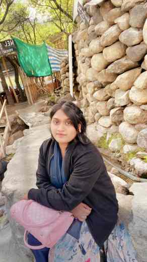

Simran Mandal
Academic | Explorer | Creative
About Me
I'm from Khandwa, Madhya Pradesh, where I grew up in a nuclear family with both parents working. This upbringing instilled in me important values of self-discipline and resilience.
Education
PGDM in HR and Business Analytics
Skills
- Creative
- Empathetic
- Calm
Interests
- Exploring new places
- Travelling to broaden horizons
- Crafting and creating art
Contact
Get in touch with me: